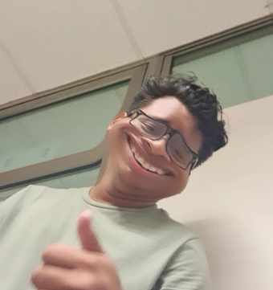
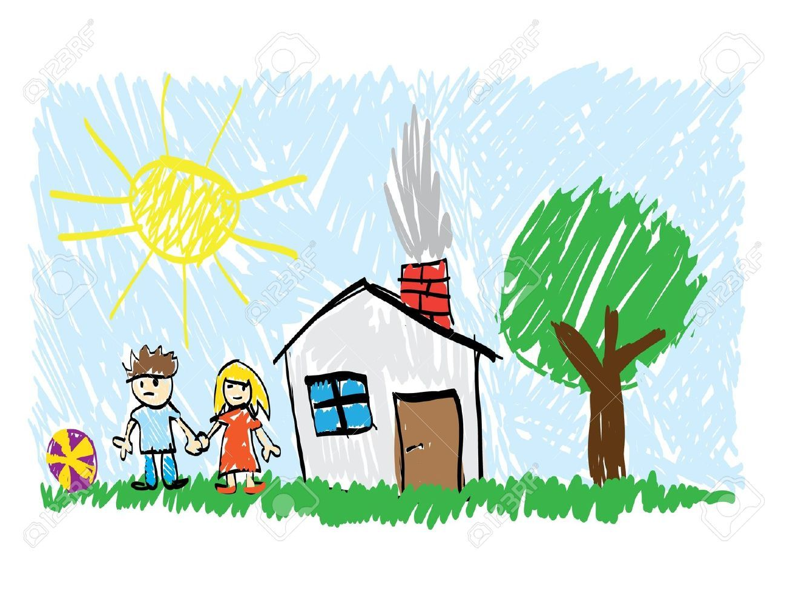
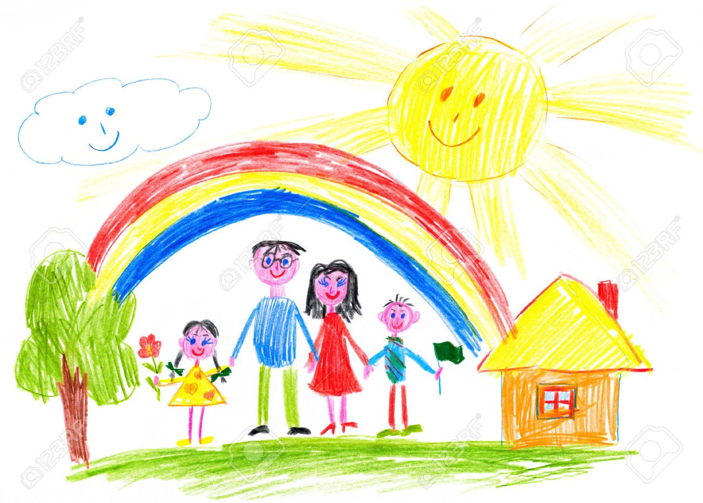

Welcome to My Story!
My name is Jesús Osbaldo Ojeda Aké. I was born on October 12, 2006, in Cancún, Mexico. I live there with my family.
I have four sisters – I'm the youngest and the only boy. Now, I study Computer Engineering at Universidad Tecnológica de Cancún.
This website shows important moments of my life.
👶 My Childhood
Baby to 5 Years
I was a happy child.
🎵 School (6–12 Years)
In kindergarten, I loved music with my teacher Graciela. At 6, I went to La Casa de los Músicos to learn piano, bass, and drums. My grandfather taught me guitar – I loved it!
🏆 Important Moments
🎹 Music
Music made me happy. I played for many hours and even in concerts.
🏆 Math & Robots
In middle school, I won math competitions (2 silver medals, 1 gold). At 12, I joined a robot team (Brigada Robótica). We got 5th place in Mexico City (2018).
🌍 COVID-19 Time
The pandemic changed my life. I slept late but thought about my future.
💻 High School
I studied Computer Maintenance at CBTIS 111. I played chess and soccer, had a girlfriend for 2 years, and learned about art. I finished school in 2024.
Things I Love to Do
🎶 Music: Play in bands and make songs.
🤖 Robots: Build robots and compete.
⚽ Sports: Soccer and chess.
💻 Computers: Fix computers for shops.
🌟 My Dreams
I will learn more about programming.
I will work with cybersecurity or AI.
I will mix music and technology.
I will help others and be a good leader.